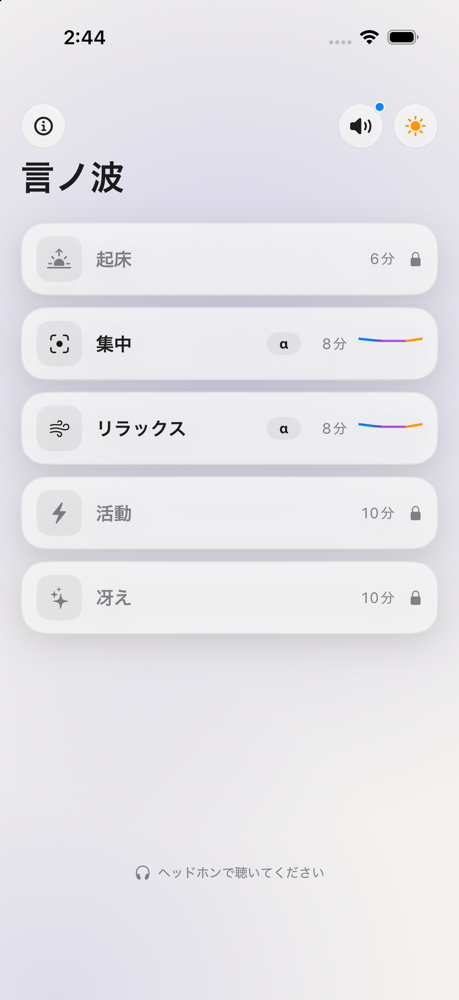
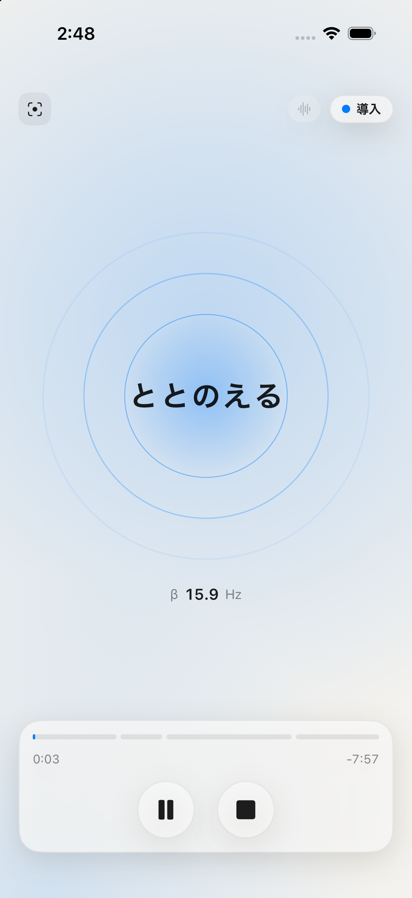
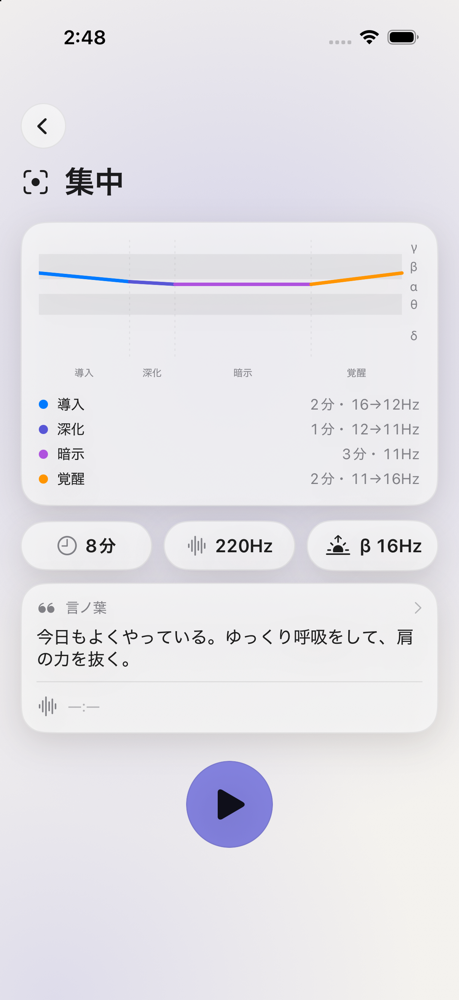

プリセットを選ぶ
目的別プリセットから選びます。無料4種に加え、購入で追加7種を解放できます。

Kotonami — 周波数が導く、静かな時間。
About
言ノ波（Kotonami）は、時間経過で周波数が変化するバイノーラルビート生成アプリです。 導入から深化・暗示・覚醒までの4段階セッションで、音を通じて落ち着いた時間を過ごせます。
画面をロックしたままでもバックグラウンドで再生が続くため、就寝前や作業中にも使いやすい設計です。
How to use
プリセットを選ぶ
目的別プリセットから選びます。無料4種に加え、購入で追加7種を解放できます。

セッションを再生する
導入・深化・暗示・覚醒の4段階で、時間経過とともに周波数が変化します。

言ノ葉を書く
プリセットごとに言ノ葉を書き留められます。暗示の段階で、この言葉が画面に表示されます。

Features
Pricing
無料プリセット（バイノーラルのみ・声なし）4種に加え、アプリ内購入（買い切り）で追加プリセット7種を解放できます。
| 区分 | 内容 |
|---|---|
| 無料 | プリセット4種（バイノーラルのみ・声なし）。広告（AdMobバナー・非パーソナライズ）を表示。 |
| 購入 | 追加プリセット7種を解放。広告非表示。 |
| 購入形態 | 価格 |
|---|---|
| 買い切り（非消耗型） | ¥980 / $6.99（Family Sharing対応） |
※ App Store アプリ内購入。価格は変更される場合があります。